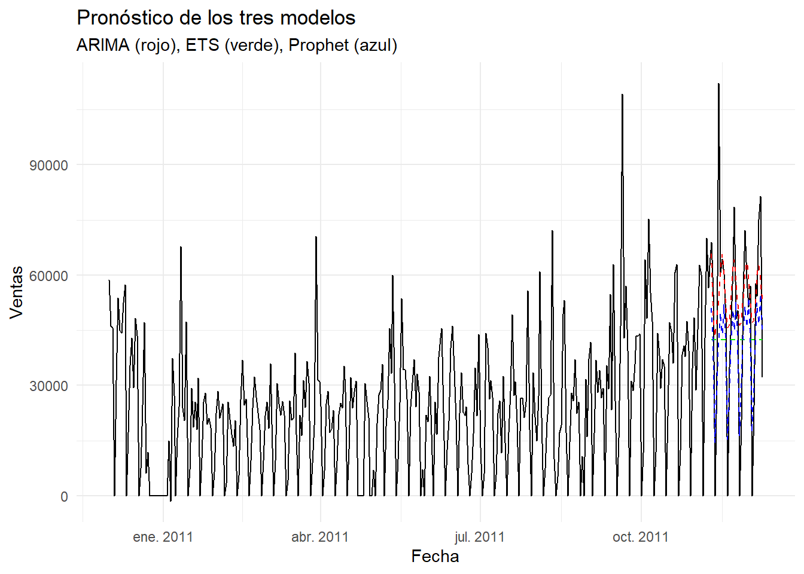

5 Avance 6
5.1 Introducción
En este avance se aplica el modelo Facebook Prophet como una estrategia para modelar la serie de tiempo trabajada en entregas anteriores. Este algoritmo es especialmente útil cuando se desea capturar patrones estacionales, tendencias no lineales y realizar predicciones con intervalos de confianza. Prophet también permite incorporar efectos de días festivos o cambios estructurales.
5.7 Separar en entrenamiento y prueba # === ARIMA ===
train <- serie[1:(nrow(serie) - 30), ]
test <- serie[(nrow(serie) - 29):nrow(serie), ]
modelo_arima <- auto.arima(train$Ventas)
forecast_arima <- forecast::forecast(modelo_arima, h = 30)
pred_arima <- as.numeric(forecast_arima$mean)
print(class(modelo_arima))## [1] "forecast_ARIMA" "ARIMA" "Arima"5.10 === Comparación de métricas ===
y_real <- test$Ventas
resultados <- data.frame(
Modelo = c("ARIMA", "ETS", "Prophet"),
ME = c(mean(y_real - pred_arima),
mean(y_real - pred_ets),
mean(y_real - pred_prophet)),
RMSE = c(rmse(y_real, pred_arima),
rmse(y_real, pred_ets),
rmse(y_real, pred_prophet)),
MAE = c(mae(y_real, pred_arima),
mae(y_real, pred_ets),
mae(y_real, pred_prophet))
)
print(resultados)## Modelo ME RMSE MAE
## 1 ARIMA -6053.017 22499.00 15396.38
## 2 ETS 6445.958 26794.12 22193.34
## 3 Prophet 8297.952 19628.40 14925.465.11 === Gráfico comparativo ===
test$Fecha <- as.Date(test$Fecha)
ggplot() +
geom_line(data = serie, aes(x = Fecha, y = Ventas), color = "black") +
geom_line(data = test, aes(x = Fecha, y = pred_arima), color = "red", linetype = "dashed") +
geom_line(data = test, aes(x = Fecha, y = pred_ets), color = "green", linetype = "dashed") +
geom_line(data = test, aes(x = Fecha, y = pred_prophet), color = "blue", linetype = "dashed") +
labs(title = "Pronóstico de los tres modelos",
x = "Fecha", y = "Ventas",
subtitle = "ARIMA (rojo), ETS (verde), Prophet (azul)") +
theme_minimal() ## Conclusiones
El modelo Prophet se presenta como una alternativa útil para modelar series con estacionalidad compleja, tendencia variable y presencia de outliers. No obstante, en este caso, el modelo ETS fue el que mostró mejores resultados en términos de error de predicción.
Esta comparación sugiere que la elección del modelo debe considerar no solo las métricas, sino también la naturaleza de la serie, la facilidad de interpretación y los objetivos del análisis.